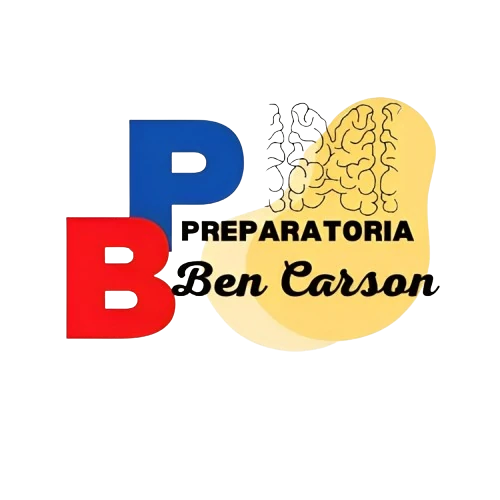
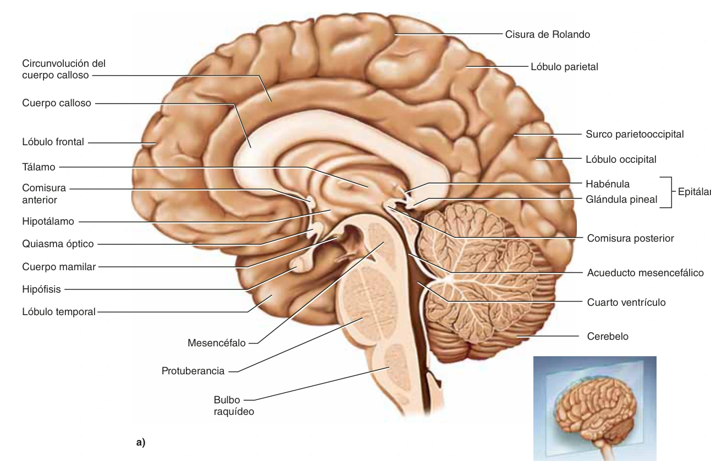

Encéfalo y pares craneales
Mapa completo · Morfofunción · Saladin
← Volver a mapas mentales
Ver todo el mapa
−
+
Abrir todo
Arrastra para moverte · Usa la rueda o dos dedos para ampliar · Toca un concepto para leerlo
Encéfalo
y pares craneales
